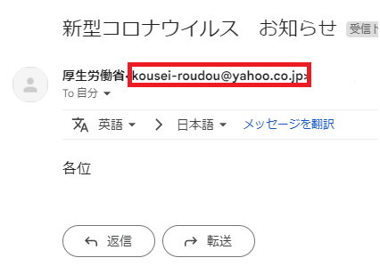
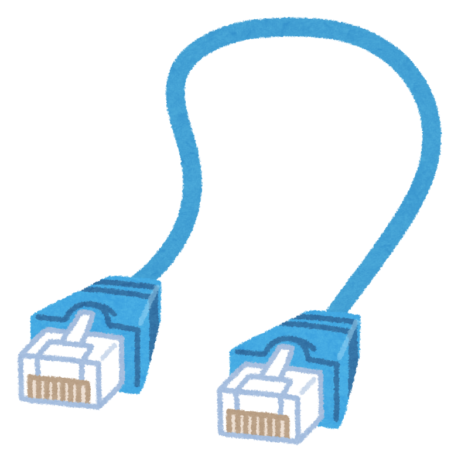
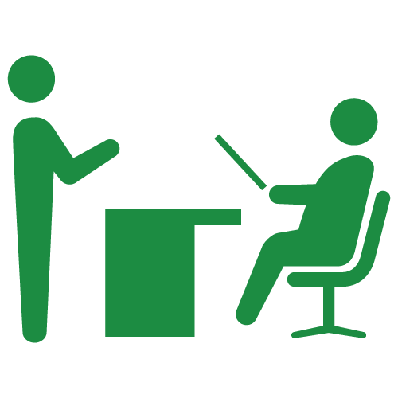

今回は標的型攻撃メール（フィッシングサイトバージョン）を体験していただきました。
ここでは種類と対策を解説いたします。
- 標的型攻撃メールの種類
- 標的型攻撃メールの対策
＜目次＞
今回は標的型攻撃メール（フィッシングサイトバージョン）を体験していただきました。
ここでは種類と対策を解説いたします。
＜目次＞
偽物のサイト（フィッシングサイト）にアクセスさせて、情報を入力させることで情報を盗む攻撃
入手した情報を暗号化して、解読できないようにすることで身代金を要求する攻撃
ウイルスを仕込んだファイルにアクセスさせて、パソコンをウイルスに感染させる攻撃
メールアドレスは簡単に偽装することができます。差出人のメールアドレスがフリーメールアドレスの場合は注意しましょう。
また、知らない人からのメールを開封する際も注意が必要です。
（例）
※厚生労働省なのにフリーメールアドレスはおかしい など。
ファイルには拡張子というファイルの種類を表す文字列があります。
拡張子が２つ付いている場合やアイコンと拡張子が一致しない場合は、開かないようにしましょう。
＜拡張子の偽造＞
＜２重拡張子＞
ファイルやリンクのクリックを促すような文章のある場合は、しっかり文章を読み直して、クリックする必要があるかを考えましょう。
また、日本語ではあまり使わない漢字（繁体字、簡体字）や言い回しがおかしい文章のメールの場合は、海外から送信されたメールの可能性があります。
標的型攻撃メールを開けてしまった場合は
LANケーブルを抜く（感染拡大防止）・上司や情報セキュリティ管理者に報告

をお願いします。
また、ランサムウェアでは身代金を要求する画面が表示されますがお金を払っても復元されない可能性があるのでお金を払わないでください。
※普段からバックアップをとるようにしましょう
以上で体験は終わりです。
お疲れさまでした。
このタブを閉じてください。